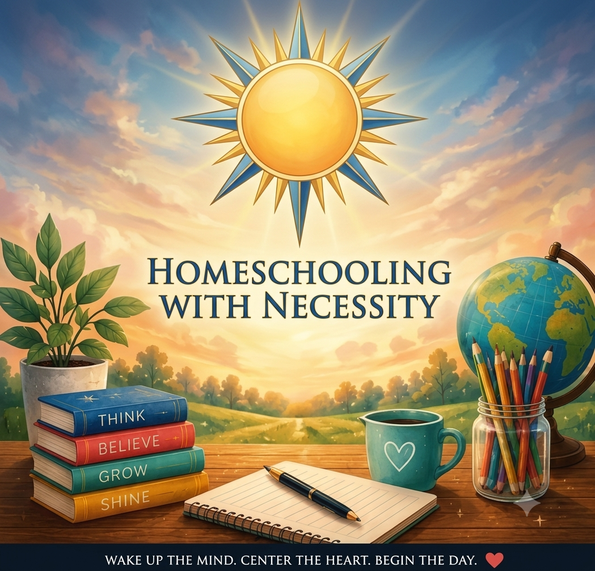

Homeschooling
Build an education around your family, your learner, and the life you're actually living.
Explore the journey →Homeschooling, homesteading, practical skills, and real-world learning. Build an education and a life that work beyond the four walls of a classroom — and beyond the limits someone else sets for you.

Be prepared.Not just a resource library. A starting point.
Explore practical tools, trusted resources, hands-on projects, and ideas that help families learn by doing — wherever life happens.
Build an education around your family, your learner, and the life you're actually living.
Explore the journey →Find K–12 learning resources, Missouri guidance, and opportunities for lifelong learning.
Visit the Education Hub →Turn experiments, homestead skills, off-grid living, and practical economics into real-world learning.
Enter The Lab →Browse growing collections of HWN originals, useful tools, and hands-on project ideas.
Explore resources →We’re not just talking about change.
We’re being the change.